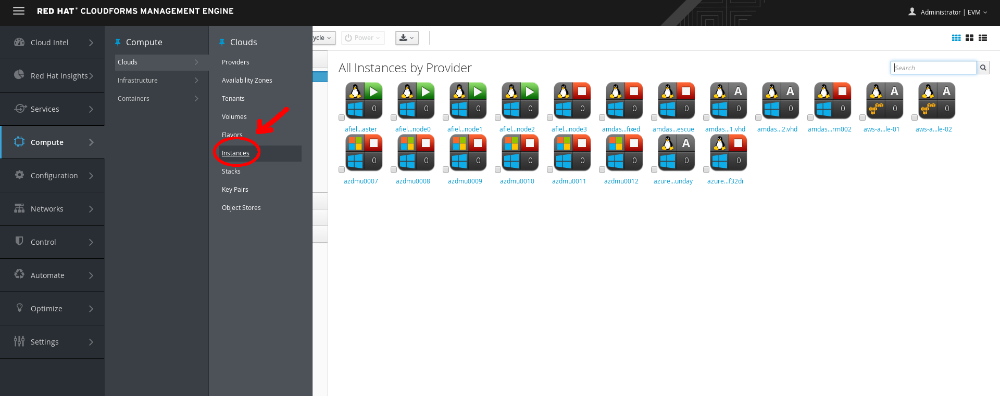
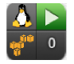
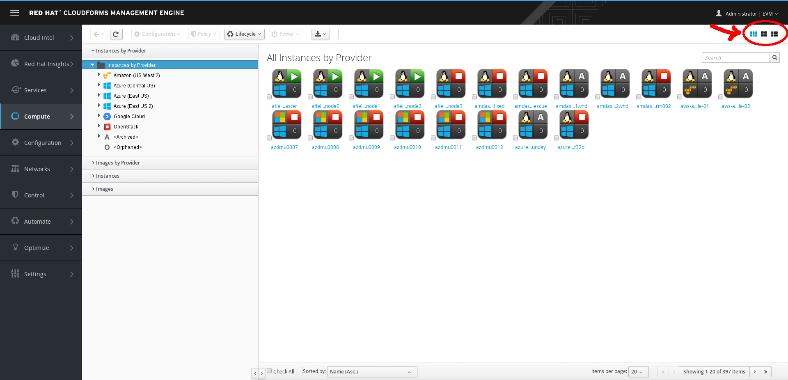
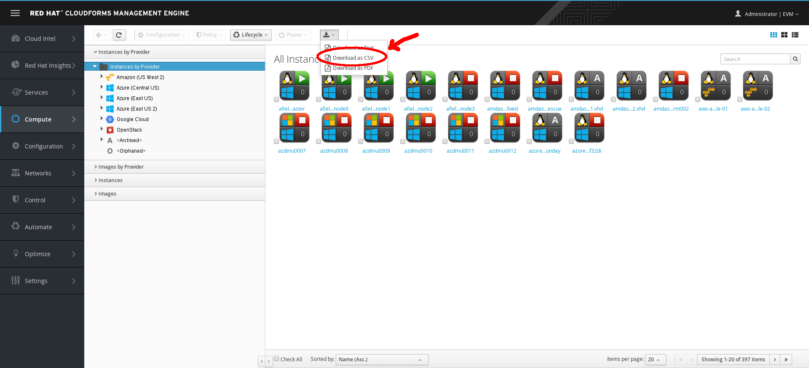
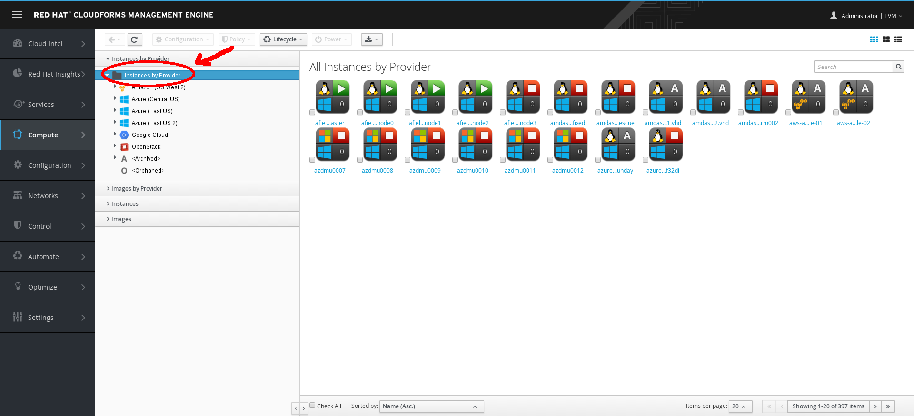
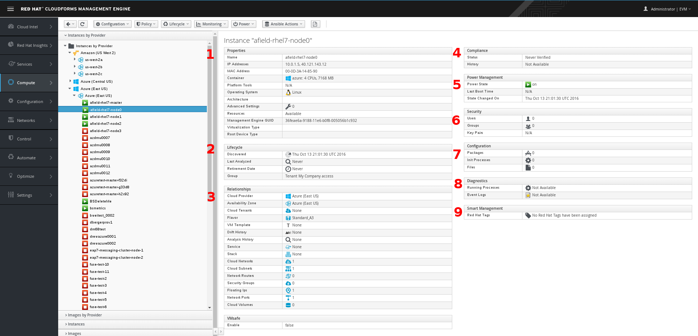

In Red Hat CloudForms, a cloud instance is a virtual machine running under cloud infrastructure. In this exercise, you will learn how to search for cloud instances and review the details related to the cloud instance.
Section 1: Explore Cloud Instances
> Select Compute → Clouds → Instances.
 Cloud Instances
A list of your public and private cloud instances displays.
Section 2: Explore the Virtual Thumbnail for Cloud Instances
The web interface uses virtual thumbnails to represent providers. Each thumbnail contains four quadrants by default, which display basic information about each provider.
 Example Virtual Thumbnail
The top left quadrant shows the operating system running on the instance.
The top right quadrant shows status of the instance.
The image in the bottom left quadrant represents the type of provider the instance is running on (Amazon EC2 or OpenStack).
The bottom right quadrant shows the number of snapshots for this instance.
A (Policy) in the center indicates that this host has one or more policies applied.
Step 1. > In the top right corner of the window, click to toggle between Grid, Tile, and List views.
 Top Window Navigation
Step 2. > Click (Download) to download a list of Cloud Instances.
 Download Instances
Section 3. Explore Cloud Instance Details
Step 1. Click the Instances by Provider accordion.
 Provider Accordion
Step 2. Select any instance and observe the following on the resulting screen.
 Instance Provider
The Properties section displays detailed information about the instance.
The Lifecycle section displays when this instance was discovered, when it was most recently analyzed, and when it is scheduled for retirement.
The Relationships section displays the related cloud provider, availability zone, flavor, and drift and analysis histories for this instance.
Step 3. Click these relationships to review how this instance relates to all of its resources.
The Compliance section shows whether the instance is compliant with its applied policies.
The Power Management section shows the instance’s current power state, most recent boot time, and most recent date that the power state changed.
The Security section lists users, groups, and key pairs.
The Configuration section lists applications/packages, initialization processes, files, and other operating system configuration-related information.
The Diagnostics section shows any running processes and event logs for this instance.
The Smart Management section shows tags you can use in policies and other CloudForms functions.
When you have finished looking at the related resources, click (Back) at the top left—not the browser’s back arrow.